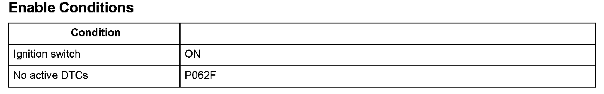

Advanced Diagnostics
DTC P0630: VIN Not Programmed or MismatchGeneral Description
The powertrain control module (PCM) stores a vehicle identification number (VIN) in the keep-alive memory and outputs the VIN according to the command from the HDS.
The VIN for each vehicle is registered to the PCM using the HDS. The registered VIN is read by the CPU from the keep-alive memory after the ignition is turned on or after the Clear command is executed.
If the VIN is not registered in the keep-alive memory when the ignition is turned on or when the Clear command is executed, it is detected as a VIN unregistered condition and a DTC is stored.
Monitor Execution, Sequence, Duration, DTC Type, OBD Status

Enable Conditions
Malfunction Threshold
The VIN is not registered in the keep-alive memory in the PCM.
Diagnosis Details
Conditions for illuminating the MIL
When a malfunction is detected, the MIL comes on and the DTC and the freeze frame data are stored in the PCM memory.
Conditions for clearing the MIL
When the VIN registration is completed, the MIL is cleared.